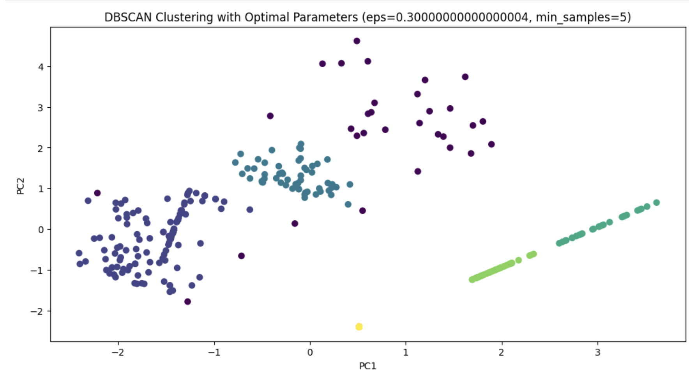

Clustering
Kmeans Clustering
Link to clustering code implementationIntroduction
- K-Means is a way of grouping data into a specified number (K) of clusters. It's like organizing similar items into K different baskets based on their features.
- First, we randomly pick K points from our data as the starting centers (centroids) of our clusters.
- Each data point is then assigned to the nearest centroid, forming clusters.
- We recalibrate the centroids by taking the average of all the points in each cluster.
- This process of assigning points and recalibrating centroids repeats until the centroids stabilize and don’t change much anymore.
- Ideal Usage: K-Means works best when we know how many clusters we should have and when the clusters are roughly spherical.
Objective
- Given the nature of your data, applying clustering algorithms like DBSCAN, K means and Agglomerative to the PCA-transformed ADHD measures could help identify clusters or patterns within the data. These clusters might reveal insights into different subtypes or severity levels of ADHD, based on how the data points group together in the PCA-reduced space
- Using the ADHD-200 dataset we would like to understand how many categorie of ADHD patients are there in the dataset.
- The feature dataset is PCA reduced dataset, which has the features Site, DX , Verbal IQ , ADHD Index.
Coding Workflow
- The code defines a range of cluster numbers to test, from 1 to 10. This is done to evaluate how the clustering performance changes with different numbers of clusters.
- For every cluster n from 1 to 10, a KMeans clustering model is initialized and the model is fitted to the data.
- The results DataFrame is updated with the current number of clusters and the corresponding 'Inertia' value
- After completing the clustering for the range of cluster numbers, the code plots these results. It uses Seaborn's lineplot to plot 'Inertia' against the 'Clusters'.This plot is often referred to as the "Elbow Method". The idea is to find the number of clusters at which the inertia starts decreasing linearly. This point (the 'elbow') is considered a good indication of the optimal number of clusters.
- Finally, the code displays the plot and prints the results DataFrame, showing the number of clusters tested and their corresponding inertia values.
Distance Metric
Also, when relevant, explore different choices of distance metric for the algorithm. Which distance metric seems to works best in which cases and why?- The default distance metric used in the k-means clustering algorithm is the Euclidean distance. This metric, also known as L2 norm or L2 distance,measures the straight line distance between two points in Euclidean space. In the context of k-means, the Euclidean distance is used to calculate the distance between data points and cluster centroids.
- The choice of Euclidean distance in k-means is mainly because it is simple, intuitive, and effective in this scenario, especially where clusters tend to be spherical
- It also aligns well with the objective function of k-means, which is to minimize the variance (or the sum of squared distances) within each cluster.
Hyper-parameter tuning using Elbow Method
Final results
-
- 2 : 59
- 1 : 55
- 0 : 48
DBSCAN (Density-Based Spatial Clustering of Applications with Noise)
Introduction
- DBSCAN focuses on the density of data points. It groups densely packed points together and identifies points in sparse areas as outliers.
- We set two key parameters: eps (a distance measure) and minPts (minimum number of points to form a dense region).
- If a point has minPts or more points within eps distance, it becomes a core point of a cluster.
- Points close to a core point but not dense enough themselves are part of the cluster but not core points.
- Points that don't meet these criteria are marked as outliers.
- DBSCAN is great for data with clusters of varying shapes and when we are concerned about outliers.
Coding Workflow
Distance Metric
- The default distance metric used in the DBSCAN (Density-Based Spatial Clustering of Applications with Noise) algorithm is typically the Euclidean distance. This metric is used to measure the distance between two points in space, which in the context of DBSCAN, helps to determine the closeness of data points.
- This method is effective in identifying clusters of varying shapes and sizes in a data set.
Hyper-parameter tuning using Silhouette Method
- The eps values at which the Silhouette Score peaks are potential candidates for optimal clustering. These peaks represent eps values where the clusters are most distinct from each other.
- Stability of the score: Besides just looking for the highest peak, we should also consider how stable the score is around that peak. If the score remains relatively high over a range of eps values, it indicates that the clustering is robust to slight variations in eps.
Final results
- The optimal number of clusters with highest Silhouette Score, optimal eps and optimal min_samples is 7 
Hierarchical clustering
Introduction
- Hierarchical clustering creates a tree of clusters. It doesn’t require us to specify the number of clusters beforehand, which can be a big advantage.
- Initially, each data point is its own cluster.
- In each step, the two nearest clusters merge into one.
- This merging continues until we have one big cluster or until we decide to stop.
- The measure of 'closeness' between clusters can vary. It might be the distance between the closest points of clusters or the farthest points, among other methods.
- Hierarchical clustering is useful when the relationship between data points is more important than arbitrary clustering, and it’s especially good for visualizing data relationships in a dendrogram (tree-like diagram).
- StandardScaler from sklearn.preprocessing for scaling the data.
- AgglomerativeClustering from sklearn.cluster for clustering. It is implemented with a specified number of clusters (n_clusters).It fits the model to the scaled data and predicts labels, storing them in labels.
- dendrogram and linkage from scipy.cluster.hierarchy for hierarchical clustering and dendrogram plotting.linkage(X, method='ward') performs hierarchical clustering using the Ward method.
- matplotlib.pyplot (aliased as plt) for plotting graphs.A scatter plot is generated with cluster labels for coloring.
- Used Elbow method to identify the optimal number of clusters. The distances at each level of the hierarchy are analyzed, particularly focusing on the last few merges.A plot is made of these distances, and the "elbow" point is identified where the acceleration of distance change is the highest (using the second derivative).This point suggests the optimal number of clusters.
- different combinations of n_clusters, linkage, and affinity hyperparameters are considered. The combination that gives the highest silhouette score is considered the best set of hyperparameters for your dataset.
Code-workflow
Hyper-parameter tuning
Final results
Results:
Compare the results of your various clustering analysis methods.- kmeans gave us 3 optimal number of clusters.
- DBSCAN gave us 6 optimal number of clusters.
- Agglomerative gave us 3 optimal number of clusters.
Conclusions:
These clustering techniques, by uncovering hidden patterns and groupings in data, not only drive advancements in science and technology but also have profound implications for decision-making in business, security, environmental management, and social research. Their ability to make sense of complex data directly affects real people by enabling more personalized services, securing systems against fraud, understanding natural phenomena better, and uncovering the subtleties of human interaction and societal structures.
Definition
Clustering is a method used in data analysis and machine learning that involves grouping a set of objects in such a way that objects in the same group (called a cluster) are more similar to each other than to those in other groups (clusters). It's a form of unsupervised learning, which means it finds patterns in the data without reference to known, labeled outcomes.